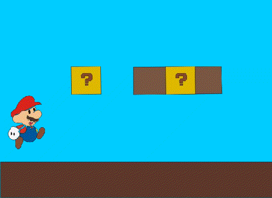
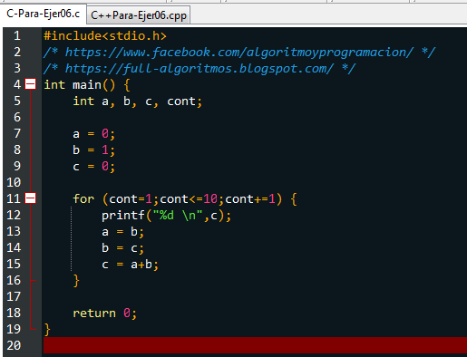

El diseño digital es la acción de concebir, programar, proyectar y realizar comunicaciones visuales, producidas en general por medios industriales y destinadas a transmitir mensajes específicos a grupos sociales determinados


#include
int main(){
int a;
printf("Cuantos valores quieres almacenar en el vector 1? ");
scanf("%d", &a);
int v[a], i;
for(i=0; i
}
int suma;
suma = 0;
for (i=0; i
}
getch(); return 0;
}
Limpieza interna del PC: Esta tarea busca retirar el polvo que se adhiere a las piezas y al interior en general de nuestro PC. Ante todo debe desconectarse los cables externos que alimentan de electricidad a nuestra PC y de los demás componentes periféricos. Para esta limpieza puede usarse algún aparato soplador o una pequeña aspiradora especial acompañada de un pincel pequeño. Poner especial énfasis en las cercanías al Microprocesador y a la Fuente.
| Numero de Prolongacion | Titulos (Cantidad) | Volumen | Titulo del Libro | Autor | Editorial | Fecha de Edicion | Asignatura |
| 529 | 9 | 1 | ANTOLOGIA DE EDUC AMBIENTAL ECOLOGIA | COBAEP | COBAEP | 1994 | ECOLOGIA |
| 530 | 2 | 1 | ANTOLOGIA ECOLOGIA Y EDUC AMBIENTAL 4°S | COBAEP | COBAEP | 2000 | ECOLOGIA |
| 531 | 1 | 1 | APUNTES SOBRE ECOLOGIA | SIN AUTOR | SIN EDITORIAL | 1993 | ECOLOGIA |